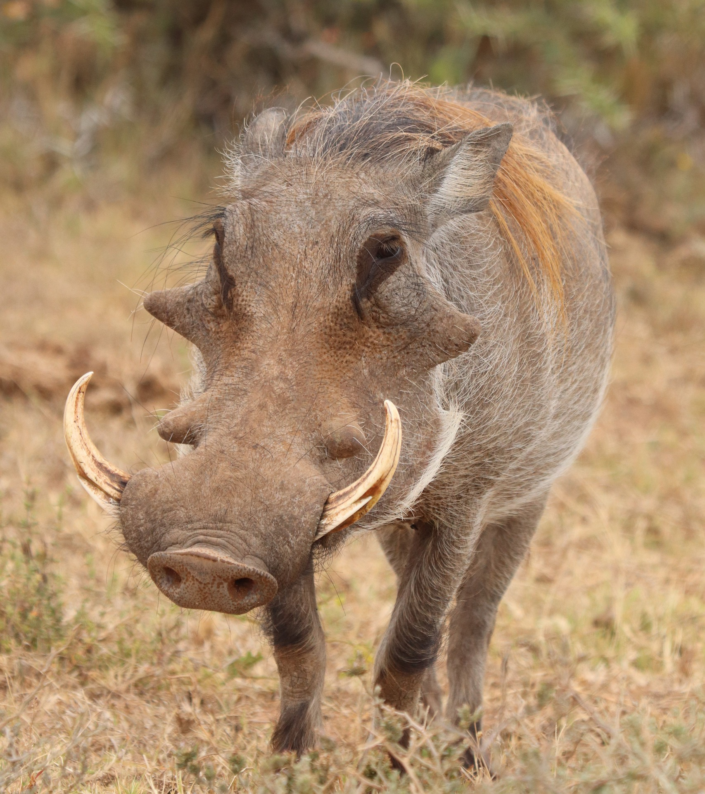

Collin's Animal Dossiers
Pick an animal

Warthog
Warthogs are a wild members of the pig family found across open and semi-open habitats in sub-Saharan Africa.

Nicobar Pigeon
The nicobar pigeon is a very colorful bird often haveing a rainbow contrast of colors they are found on small islands on the coastal regions from india's Andaman.

Gaboon Viper
The Gaboon viper is on the larger side of venomous snakes almost looking like a constriter snake.

Trumpeter Hornbill
The Trumpeter is a medium-sized social forest brid native to sub-equatorial and southern africa